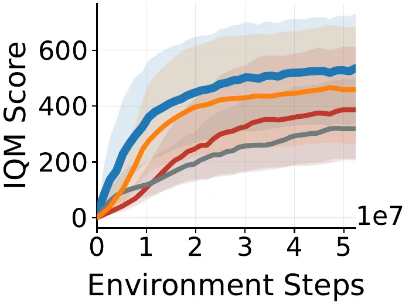
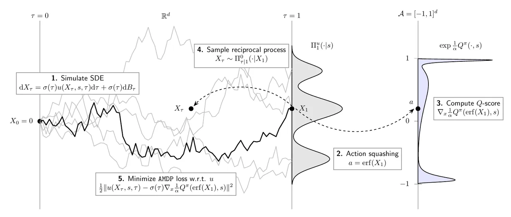
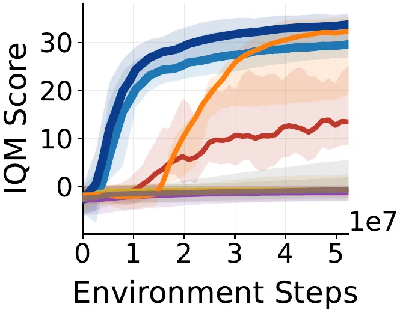
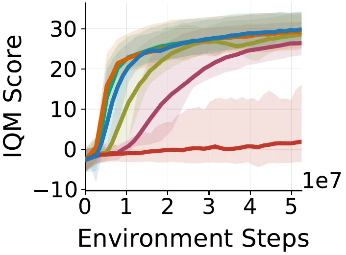

扩散策略能表达复杂的多模态动作分布，但在线 RL 里训练它们要么靠反向传播穿过整条扩散链（显存爆炸），要么靠 importance sampling / 截断 Langevin（难扩展、缺保证）。AMDP 把最大熵 RL 改写成一个 stochastic optimal control (SOC) 问题，用 reciprocal adjoint matching 得到一个类似 score matching 的回归目标——免仿真、免链式反向传播，仅用 replay buffer 里的终端动作即可多次更新。在 63 个环境上，AMDP 匹配或超越强基线，训练墙钟时间追平高效的 Gaussian on-policy 方法。
在线 RL 没有 ground-truth 数据集，因此 score matching / bridge matching 这类目标无法直接使用。论文把现有训练扩散策略的方法归纳为三类，并指出各自的硬伤：
能不能有一个既像 score matching 一样可扩展的回归目标、又对 RL 有理论支撑，还能免仿真、免链式反向传播地训练扩散策略的方法？

扩散策略把动作生成建模为一个受控 SDE：dXτ = σ(τ)u(Xτ,s,τ)dτ + σ(τ)dBτ，动作 a=X1。目标是找到漂移 u 使终端边缘 Πu1 等于最优最大熵策略 π*(a|s) ∝ exp(Qπ(s,a)/α)。作者用确定性初值 X0=0 保证参考过程 memoryless，从而把 Schrödinger bridge 问题解耦成一个 path-space 上的变分目标——这正是一个二次运行代价、终端代价为 g=logΠ01−Qπ/α 的 SOC 问题。

Adjoint Matching (AM) 把 path-space KL 目标写成一个 fixed-point 回归损失，其唯一不动点就是最优控制 u*（用 stop-gradient ū=sg(u)，无需穿过扩散过程求导）。Havens 等的 reciprocal 改进把期望取在参考过程的 reciprocal projection 上：在 X0=0 设置下，条件分布 Π0τ|1 是一个可解析采样的 state-independent 高斯。于是可以把当前控制的终端样本 X1 存进 replay buffer，然后免仿真地（simulation-free）反复优化，并"reuse them for multiple gradient updates"——效率与 score/flow matching 同级，且保有与 AM 相同的理论保证。
动作空间通常是有界的 [−1,1]d，需用可逆变换 f 把 X1 squash 进合法区间，change-of-variables 会带来 Jacobian 项 |det Jf|。作者不用常见的 tanh，而用缩放误差函数 ferf(x)=erf(kx)，并把缩放因子 k 选成使 |det Jf| 恰好抵消参考过程的高斯边缘密度 Π01。此时 log(Π01/|det Jf|) 变成与 X1 无关的常数、梯度消失，训练目标被大幅简化为只含 Q-score 的一项；实验中 erf 也表现出"superior numerical stability"。
on-policy 里目标分布漂移很快，更新易不稳。作者加了一个 trust-region 约束（把新旧漂移 u 与 uold 的偏差限制在 ε 内），用 relaxed Lagrangian + dual descent 求解。因为 AMDP loss 与 TR loss 都是 u 的二次凸函数，强对偶成立；Proposition（fixed-point preservation）证明：对任意 λ≥0，加入 trust region "preserves the unique fixed point"，不改变原目标的最优解。策略评估侧则用一个可处理的熵下界 ℒENT（因扩散策略的边缘熵不可解）构造 soft Bellman backup，从而给出收敛到最优最大熵策略的策略迭代保证。
on-policy 在 MuJoCo Playground、ManiSkill、HumanoidBench 共 63 个高度并行环境上评测，对比强 Gaussian 基线 REPPO / PPO / SPO 与扩散策略方法 DPPO / FPO / DIME；off-policy 在 DMC 的 7 个高维 dog & humanoid 环境上对比 DIME / QSM / Diff-QL / Consistency-AC。所有实验重复 10 seeds，按 Agarwal 等的建议报告 IQM 与 95% 分层 bootstrap 置信区间。
simulation-free 目标最直接的收益是：AMDP 的网络训练时间（Upd.）几乎与扩散步数无关，而对整条扩散链反向传播的 reverse-KL 随步数线性爆炸。
| 方法 | 扩散步数 | Cartpole · Env. | Cartpole · Upd. | G1 · Env. | G1 · Upd. |
|---|---|---|---|---|---|
| REPPO (Gaussian) | — | 83 | 948 | 9,605 | 1,014 |
| AMDP | 16 | 404 | 994 | 10,031 | 1,113 |
| rev. KL | 16 | 404 | 9,944 | 10,041 | 11,421 |
| AMDP | 128 | 2,738 | 991 | 13,097 | 1,117 |
| rev. KL | 128 | 2,751 | 71,659 | 13,129 | 82,101 |
（Env. = rollout 时间，Upd. = 网络训练时间；论文 Table。128 步时 AMDP 的 Upd. 约 991 ms，而 reverse-KL 高达 71,659 / 82,101 ms，相差近两个数量级。）

作者在 MuJoCo Playground DMC 与 Humanoid 上系统消融了每一处设计：

off-policy：在 DMC 高维 dog & humanoid 上，AMDP 匹配 DIME 的性能、在 dog 环境上收敛略快，说明 adjoint matching 目标在 off-policy 设置下也是与 reverse-KL 相当的有力策略优化损失。
为满足 adjoint matching 所需的 memoryless 性质，AMDP 把参考过程限制为确定性初值 X0=0；而在离线行为数据上预训练的扩散策略通常用随机高斯先验 μ0=𝒩(0,I)。这一结构性差异"complicates the integration of our method into offline-to-online RL pipelines"。作者提出的可能出路是采用 memoryless noise schedule 以兼容标准 flow-matching / denoising diffusion 模型，并留作 future work。
训练信号核心是 ∇xQπ（Q-score）。策略改进的质量因此取决于 critic 及其梯度的准确性；trust region 正是为在 Q 估计可靠的邻域内更新而设计——这也暗示当 Q 估计较差时更新收益有限。
在较复杂的 humanoid locomotion 上，AMDP 需要评估时对 Q 提议 N=16 个样本取最优（AMDP BoN）才能全面超过基线；这会在部署/评估时引入额外的 Q 评估开销（HumanoidBench 上则无需 BoN 即领先）。